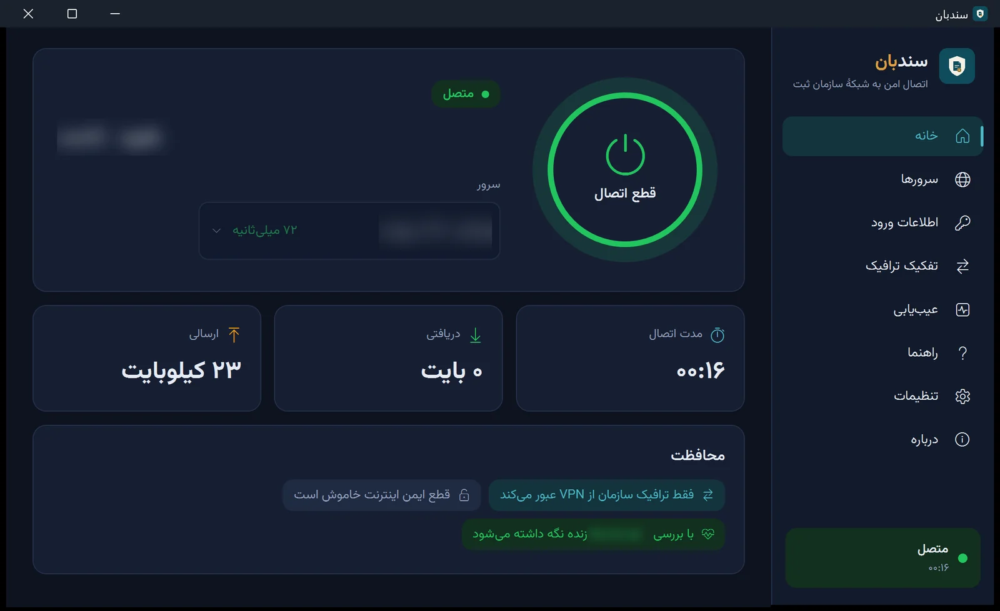

اتصال مطمئن دفترخانه به شبکهٔ سازمان ثبت A connection to the registry network your office can rely on
سندبان با یک دکمه وصل میشود، فقط ترافیک سازمان را از VPN عبور میدهد، اتصال را زنده نگه میدارد و اگر ویندوز خطا بدهد، به زبان ساده میگوید چه شده و چه باید کرد. SanadBan connects with one press, sends only registry traffic through the VPN, keeps the connection alive, and when Windows reports an error it says in plain words what happened and what to do.
نسخهٔ ۰.۲.۱؛ یک فایل برای ویندوز ۱۰ و ۱۱ روی x64 و ARM64. رایگان، بدون حساب کاربری. Version 0.2.1, one file for Windows 10 and 11 on x64 and ARM64. Free, no account needed.
سندبان چه میکندWhat SanadBan does
- یک دکمه برای اتصالOne press to connect
- برای هر سرور همان پروتکلی بهکار میرود که آن سرور میپذیرد: SSTP، PPTP، L2TP/IPsec یا IKEv2؛ همه از خودِ ویندوز، بدون برنامهٔ اضافه.Each server gets the protocol it accepts: SSTP, PPTP, L2TP/IPsec or IKEv2, all built into Windows, with nothing extra to install.
- فقط ترافیک سازمان از VPNOnly registry traffic through the VPN
- اینترنتِ دفترخانه همانطور که بود میماند و فقط شبکهٔ سازمان ثبت از VPN عبور میکند. نشانیهای سازمان هنگام اتصال از DNS سازمان پرسیده میشوند.The office internet stays as it was; only the registry network goes through the VPN, and registry names are looked up on the registry DNS while connected.
- اتصالی که برقرار میماندA connection that stays up
- زنده بودنِ اتصال مرتب بررسی میشود و اگر قطع شود، سندبان دوباره وصل میشود و هر بار کمی بیشتر صبر میکند. «قطع ایمن اینترنت» هم اگر بخواهید، ترافیک سازمان را تا برگشتنِ VPN نگه میدارد.The connection is checked regularly and SanadBan reconnects when it drops, waiting a little longer each time. If you want, the kill switch holds registry traffic back until the VPN is up again.
- رمز عبور در امانPasswords kept safe
- اطلاعات ورود با کلید همین رایانه رمزگذاری میشود و فقط سرویس سندبان از آن استفاده میکند. یک اطلاعات ورود برای همهٔ سرورها کافی است.Logins are encrypted with this computer's key and used only by the SanadBan service. One login can serve every server.
- علت را پیدا میکندFinds the cause
- «عیبیابی» آداپتورهای شبکه، DNS، سرورها، اینترنت و VPN را آزمایش میکند و گزارشی برای پشتیبانی میسازد. «راهنما» خطاهای رایج VPN ویندوز را یکییکی توضیح میدهد.Troubleshoot tests the network adapters, DNS, servers, internet and the VPN, and saves a report for support. The Guide explains the common Windows VPN errors one by one.
- دسترسی مدیر، فقط یک بارAdministrator rights, once
- سرویس پسزمینه یک بار نصب میشود. پس از آن میتوانید پنجره را ببندید؛ اتصال از ناحیهٔ اعلان کنار ساعت برقرار میماند.The background service is installed once. After that you can close the window; the connection stays up from the notification area next to the clock.
- خودش بهروز میشود، با امضاUpdates itself, signed
- نسخهٔ جدید بیصدا از GitHub دریافت میشود، امضای توسعهدهنده بررسی میشود و وقتی رایانه بیکار است نصب میشود. اگر درست راه نیفتد، نسخهٔ قبلی برمیگردد.New versions download quietly from GitHub, the developer's signature is checked, and they install while the computer is idle. If one does not start properly, the previous version comes back.
- فارسی و انگلیسیPersian and English
- فارسیِ کاملاً راستبهچپ یا انگلیسی، با پوستهٔ روشن و تیره که از ویندوز پیروی میکند.Fully right-to-left Persian or English, with light and dark themes that follow Windows.
تفکیک ترافیک، به زبان سادهSplit tunnel, simply
فقط آنچه به سازمان ثبت مربوط است از VPN میرود؛ باقیِ کارهای دفترخانه سرعتِ اینترنتِ خودش را دارد. اگر بخواهید، شبکهها و وبسایتهای دیگری هم اضافه کنید یا همهچیز را از VPN بفرستید.Only what belongs to the registry goes through the VPN; everything else the office does keeps the speed of its own internet. You can add networks and websites of your own, or send everything through the VPN.
صفحههای برنامهInside the app

نصب در چهار گامInstall in four steps
این فایل فقط برای نخستین نصب است. نسخههای نصبشده خودشان بهروز میشوند.This file is only for the first install. Installed copies update themselves.
- فایل SanadBan-0.2.1-win.zip را دریافت و از حالت فشرده خارج کنید (راستکلیک، «استخراج همه»).Download SanadBan-0.2.1-win.zip and unpack it (right-click it, then Extract All).
- SanadBan.exe را در بالای پوشه باز کنید. خودش برنامهٔ مناسبِ پردازندهٔ رایانه را اجرا میکند.Open SanadBan.exe at the top of the folder. It starts the right program for the computer's processor.
- در نوار زرد بالای پنجره «نصب سرویس» را بزنید و پیام ویندوز را تأیید کنید. این کار برای هر رایانه فقط یک بار لازم است.Press Install service in the yellow bar at the top and approve the Windows prompt. This is needed once per computer.
- در «سرورها» «افزودن سرورهای سازمان ثبت»، در «اطلاعات ورود» نام کاربری و رمز عبور را وارد کنید و در «خانه» «اتصال» را بزنید.On Servers press Add registry servers, on Logins add your user name and password, then press Connect on Home.
پیشنیاز: ویندوز ۱۰ یا ۱۱ (x64 یا ARM64) و .NET 10 Desktop Runtime از مایکروسافت.Needs Windows 10 or 11 (x64 or ARM64) and Microsoft's .NET 10 Desktop Runtime.